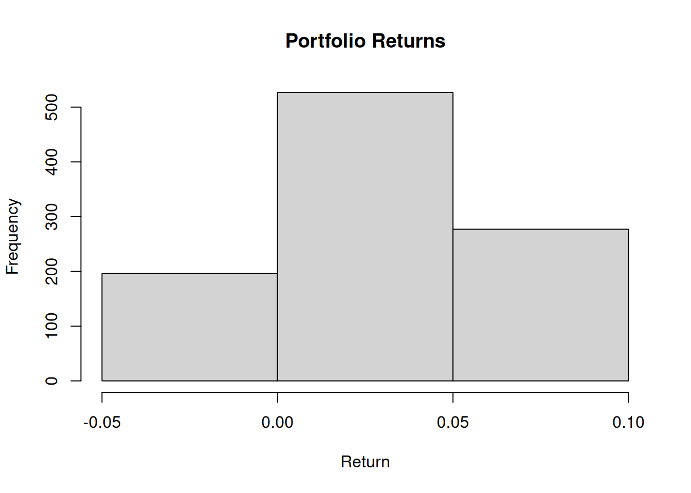
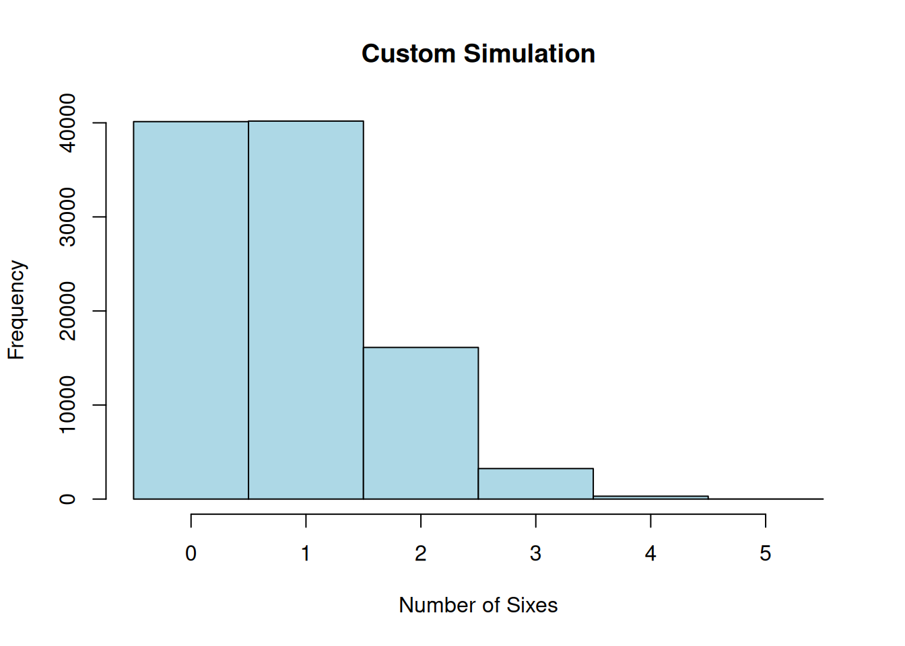
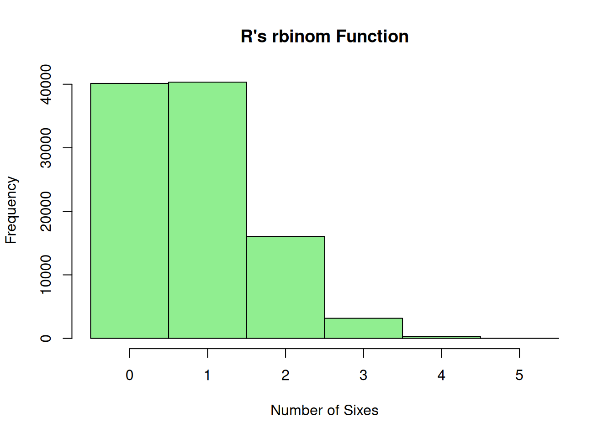
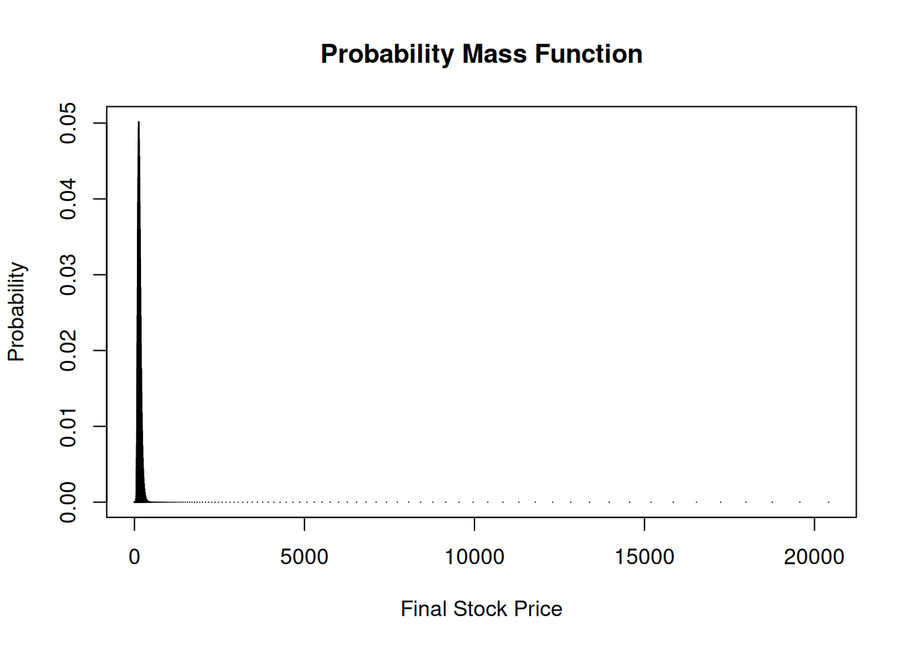

x <- 1:6
prob <- rep(1/6, 6)
barplot(prob, names.arg = x, col = "blue",
main = "Probability Mass Function",
xlab = "Outcome",
ylab = "Probability")
Random variables are the main mathematical tools that allow us to quantify and analyze uncertainty in Finance for complex portfolios and other financial contexts like risk management and credit risk analysis. Whether we are modeling the returns of a portfolio, assessing risk, or simulating market dynamics, random variables provide the foundation for probabilistic reasoning.
Throughout the previous lectures, we have encountered concepts such as conditional probabilities, dependencies, and independence. These ideas have helped us build intuition for modeling uncertainty. However, as we move into more advanced applications like portfolio risk modeling and asset price dynamics, a more explicit and formal treatment of random variables becomes unavoidable.
Random variables are at the core of probability theory, serving as a bridge between real-world phenomena and mathematical models. They allow us to represent uncertain outcomes numerically and provide a framework for analyzing those outcomes using tools such as expected value, variance, and covariance. These measures are indispensable for understanding and managing financial risk.
Random variables are not just theoretical constructs—they play a vital role in applications like:
By the end of this lecture, you will:
We will proceed as follows:
Let’s begin by exploring what random variables are and why they are so central to understanding uncertainty in finance.
A random variable is a numerical outcome of a random phenomenon. Formally, a random variable is a function that assigns a real number to each outcome in the sample space of a random experiment. More explicitly:
A random variable \(X\) is a function \(X:\mathcal{S} \to \mathbb{R}\) from the sample space (the set of all possible outcomes of the random experiment) to the real numbers.
This formal definition allows us to generalize and analyze a wide variety of real-world scenarios. For instance:
By explicitly recognizing these as random variables, we can now apply a systematic framework to quantify their behavior and analyze them.
Note that it is a widely held convention in probability theory to use capital letters such as \(X\) and \(Y\) etc. as symbols of a random variable.
Random variables come in two varieties, depending on the properties of the sample space \({\cal S}\). If the sample space is a finite or countably finite set, the sample space is discrete and we talk of a discrete random variables.
Sometimes it is natural to consider continuous sample spaces. For example when we consider the return of an asset over a year or the price of a stock at a specific time. In this case we call a random variable continuous. Continuity comes with the need to mount a bigger mathamtical machinery than we will use in this course. We will discuss continuous random variabls in the next lecture. Her we stick with the concept of a distcrete random variable.
A random variable is characterized by its probability distribution, which describes how probabilities are assigned to its possible values.
The probability distribution of a discrete random variable is described by its probability mass function (PMF): \[\begin{equation*} P(X = x) = p(x) \end{equation*}\] where \(p(x)\) satisfies:
We can visualize a PMF. Consider a random variable \(X\) that represents the outcome of rolling a fair six-sided die. The PMF is: \(P(X = x) = \frac{1}{6}, \quad x = 1, 2, 3, 4, 5, 6\).
This can be visualized as a bar plot:
x <- 1:6
prob <- rep(1/6, 6)
barplot(prob, names.arg = x, col = "blue",
main = "Probability Mass Function",
xlab = "Outcome",
ylab = "Probability")
This plot shows that each outcome has an equal probability of \(\frac{1}{6}\) symbolized as a bar. The geometry of this bar has no meaning. The bars could be thinner or thicker while displaying the same information.
Let me discuss some common confusions that arise often with understanding the cocnept of a random variable.
Random Variable vs. Outcome: A random variable is not the same as an individual outcome. It is a function that assigns values to outcomes. The confusion is partially created by the name. Maybe a better term would be a random mapping. Anyway, keep in mind that a random variable is a function.
Probability Distribution vs. Histogram: A probability distribution represents theoretical probabilities. Don’t mix this concept up with the concept of a histogram, known from statistics and data analysis, which shows frequencies of empirical data.
Discrete vs. Continuous: Discrete variables take specific values (e.g., dice outcomes), while continuous variables can take any value in a range. Dealing with continuous variables needs specifc tools which we discuss in lecture 5.
Think of scenarios where you could define a discrete random variable.
For instance:
Simulate and visualize the PMF of these examples in R. Use the barplot() function to create intuitive visualizations.
A related concept to the probability mass function (PMF), is the cumulative distribution function (CDF). It can also be used to describe a discrete random variable. The CDF provides the probability that the random variable \(X\) takes a value less than or equal to a specific value \(x\):
The cumulative distribution function (CDF) of a discrete random variable \(X\) is defined as: \[F(x) = P(X \leq x) = \sum_{t \leq x} P(X = t),\]
where \(F(x)\) is non-decreasing and satisfies:
Consider again the random variable \(X\) representing the outcome of rolling a fair six-sided die. The PMF is: \[P(X = x) = \frac{1}{6}, \quad x = 1, 2, 3, 4, 5, 6.\]
The CDF, \(F(x)\), can be computed as:
The CDF can be visualized as a step function, showing the cumulative probabilities:
x <- 1:6
cdf <- cumsum(rep(1/6, 6))
plot(x, cdf, type = "s", col = "blue", lwd = 2,
main = "Cumulative Distribution Function",
xlab = "Outcome",
ylab = "F(x)")
Here are some key points to keep in mind when working with cumulative distribution functions (CDFs):
If you’re ever unsure, visualize the CDF to better understand how probabilities accumulate!
The concepts of a probability mass function (PMF) and cumulative distribution function (CDF) can be extended to more than one random variable. When working with multiple random variables, we are often interested in their joint distribution, which describes how they behave together, and conditional distributions, which describe how one variable behaves given specific information about another. I discuss here the generalisation to two to avoid the tedious and sometimes confusing index notation that would be needed when we go beyond two dimensions. Two dimensions can be furthermore visualized helping our intuition. All of the follwing generalizes to more than two random variables.
The joint PMF of two discrete random variables \(X\) and \(Y\) is defined as: \[P(X = x, Y = y) = p(x, y),\] where \(p(x, y)\) satisfies:
Let me give an example: Imagine rolling two fair six-sided dice. Let \(X\) and \(Y\) represent the outcomes of the first and second dice, respectively. The joint PMF is: \[P(X = x, Y = y) = \frac{1}{36}, \quad x, y = 1, 2, 3, 4, 5, 6.\]
This joint PMF captures the probability of every possible pair of outcomes, such as \((X = 2, Y = 5)\).
A visualization tool for two dimensional PMFs is the heatmap. The \(x\) and \(y\) axis of the heat map symbolized the values of \(X\) and \(Y\) whereas the third dimension visualizes the probability of each pair of values \((X,Y)\) by a colur code. So, for examplem when the dice are fair we should have a probability of \(1/36\) for each basic outcome, so you should see only one uniform color. To illustrate this visualization concept, imagine an example where the dice are biased:
# Define the outcomes and probabilities for two biased dice
outcomes <- 1:6
prob_die1 <- c(0.05, 0.1, 0.2, 0.25, 0.2, 0.2) # Probabilities for die 1
prob_die2 <- c(0.1, 0.15, 0.2, 0.25, 0.2, 0.1) # Probabilities for die 2
# Compute the joint PMF as the outer product of the two probability vectors
joint_pmf <- outer(prob_die1, prob_die2)
# Create a heatmap using the image() function
image(
1:6, 1:6, joint_pmf,
col = colorRampPalette(c("white", "blue"))(100),
xlab = "Outcome of Die 2",
ylab = "Outcome of Die 1",
main = "Heatmap of Joint PMF (Two Biased Dice)",
axes = FALSE
)
# Add axis labels
axis(1, at = 1:6, labels = outcomes)
axis(2, at = 1:6, labels = outcomes)
# Add a color legend
legend(
"topright",
legend = round(seq(min(joint_pmf), max(joint_pmf), length.out = 5), 3),
fill = colorRampPalette(c("white", "blue"))(5),
title = "Probability"
)
Here you see immediately that something must be going on with the dice. Would the dice be fair there should be a uniform color all over the heatmap with a color at the value of \(1/36\) or \(0.03\). Try it!
In a similar way as in the case of the PMF we can define:
The joint CDF of two random variables \(X\) and \(Y\) is defined as: \[F(x, y) = P(X \leq x, Y \leq y).\]
This function provides the cumulative probability for pairs of random variables being less than or equal to specified values.
Finally when we have more than one random variable we encounter conditional distributions.
When we have additional information about one random variable, we can refine our understanding of the other through a conditional distribution.
The conditional PMF of \(X\) given \(Y = y\) is:
\[P(X = x \mid Y = y) = \frac{P(X = x, Y = y)}{P(Y = y)},\] provided \(P(Y = y) > 0\).
Can joint PMFs include dependent variables? Yes, joint PMFs can include dependent variables. In fact, joint PMFs are a powerful tool for describing the relationship between two (or more) discrete random variables, whether they are independent or dependent.
For independent random variables \(X\) and \(Y\), the joint PMF satisfies: \(P(X = x, Y = y) = P(X = x) \cdot P(Y = y)\)
The probabilities of \(X\) and \(Y\) are completely separate and don’t influence each other. Example: Rolling two fair dice where the outcome of one die does not influence the other.
For dependent random variables, the joint PMF does not satisfy the independence condition. Instead, the joint PMF captures the interaction between \(X\) and \(Y\). For example: \(P(X = x, Y = y) \neq P(X = x) \cdot P(Y = y)\).
The probabilities of \(X\) and \(Y\) are intertwined, reflecting their dependency. A classical example is the drawing two cards from a deck without replacement. Let \(X\) be the value of the first card, and \(Y\) the value of the second card. Once the first card is drawn, the probabilities for \(Y\) change because there is one less card in the deck. An example nearer to finance is the case of a portfolio of financial assets each with risky payoff. You can then model each asset as a random variable. In a portfolio the different assets will in general not be independent. Common factors, such as general market sentiment, macroeconomic conditions, dependecne in production through supply chains etc., may driev the uncertainty of several assets simultaneously.
The dependency between (X) and (Y) can also be described using conditional probabilities:
For dependent random variables \(X\) and \(Y\) the joint PMF satisfies \[\begin{equation*} P(X = x, Y = y) = P(X = x \mid Y = y) \cdot P(Y = y). \end{equation*}\]
This representation emphasizes how the probability of \(X\) depends on \(Y\). For instance, in the dice example, if one die is biased to always match the other, \(P(X = x \mid Y = y) = 1\) when \(x = y\).
# Define a joint PMF for dependent dice: one die matches the other
outcomes <- 1:6
joint_pmf <- diag(1/6, 6, 6) # Probability of matching outcomes is 1/6 for each pair
# Create heatmap for the dependent joint PMF
image(
1:6, 1:6, joint_pmf,
col = colorRampPalette(c("white", "blue"))(100),
xlab = "Outcome of Die 2",
ylab = "Outcome of Die 1",
main = "Heatmap of Joint PMF (Dependent Dice)",
axes = FALSE
)
axis(1, at = 1:6, labels = outcomes)
axis(2, at = 1:6, labels = outcomes)
# Add a color legend
legend(
"topright",
legend = round(seq(min(joint_pmf), max(joint_pmf), length.out = 5), 3),
fill = colorRampPalette(c("white", "blue"))(5),
title = "Probability"
)
Keep in mind:
When working with random variables, we often need to summarize their behavior in a way that allows us to make decisions, compare outcomes, or model uncertainty. This is where the concepts of expected value, variance, and covariance come into play:
Expected value provides a measure of the central tendency of a random variable, giving us a “weighted average” that reflects the most likely or typical outcome over the long run. It allows us to predict the average result in situations with uncertainty.
Variance and its square root, the standard deviation, quantify the spread or variability of a random variable’s outcomes. These measures are crucial for understanding risk in contexts like finance, where variability often corresponds to uncertainty or volatility.
Covariance extends this idea to pairs of random variables, capturing how changes in one variable are related to changes in another. This is particularly important in portfolio theory, where understanding how asset returns move together enables better diversification and risk management.
Together, these tools provide a mathematical framework for understanding, summarizing, and modeling uncertainty, making them indispensable in fields ranging from finance to engineering to data science.
So let us dive into the formal definitions.
The expected value (or mean) of a random variable is a summary measure that captures the central tendency of its distribution. It represents the long-run average value of the variable if the experiment is repeated infinitely often.
The expected value \(\mathrm{E}(X)\) of a discrete random variable \(X\) is the probability-weighted sum of all its possible values: \[ \mathrm{E}(X) = \sum_{i=1}^{n} x_i p(x_i), \] where \(x_i\) are the possible values of \(X\) and \(p(x_i)\) are their associated probabilities.
Note that for countably infinite outcomes, convergence conditions are required, but we focus on finite cases here.
As an example, consider a fair six-sided die. The possible outcomes are \(\{1, 2, 3, 4, 5, 6\}\), each with probability \(1/6\). The expected value is:
# Expected value of a fair die
outcomes <- 1:6
probabilities <- rep(1/6, 6)
expected_value <- sum(outcomes * probabilities)
expected_value # output[1] 3.5Although the expected value is 3.5, this value will never actually occur in a single roll—it is a theoretical average that represents the long-term central tendency of the outcomes if the die is rolled repeatedly. In other words, the expected value is not necessarily a possible outcome but rather a weighted average that balances all possible outcomes according to their probabilities. This highlights a common misunderstanding: the expected value is not a prediction of what will happen in a single trial, but a summary of what we can expect over many repetitions of the experiment.
While the expected value provides the central tendency, the variance measures the spread of a random variable around its expected value.
The variance of \(X\) is the expected value of the squared deviations from its expected value: \[ \mathrm{Var}(X) = \mathrm{E}[(X - \mathrm{E}(X))^2]. \]
For discrete random variables, this can be computed as: \[ \mathrm{Var}(X) = \sum_{i=1}^{n} \left(x_i - \mathrm{E}(X)\right)^2 p(x_i). \]
Using algebra, variance can also be written as: \[ \mathrm{Var}(X) = \mathrm{E}[X^2] - (\mathrm{E}[X])^2. \]
The standard error is the square root of the variance: \[ \mathrm{SE}(X) = \sqrt{\mathrm{Var}(X)}. \] It provides a measure of spread in the same units as the random variable.
Using the fair die example, calculate the variance and standard deviation:
# Variance and standard deviation of a fair die
E_X_squared <- sum(outcomes^2 * probabilities)
variance <- E_X_squared - (expected_value^2)
std_dev <- sqrt(variance)
variance # Output: 2.916667[1] 2.916667std_dev # Output: 1.707825[1] 1.707825The covariance measures the linear relationship between two random variables.
For two random variables \(X\) and \(Y\) their covariance is defined as It is defined as: \[ \mathrm{Cov}(X, Y) = \mathrm{E}[(X - \mathrm{E}(X))(Y - \mathrm{E}(Y))]. \]
Alternatively: \[ \mathrm{Cov}(X, Y) = \mathrm{E}[XY] - \mathrm{E}[X]\mathrm{E}[Y]. \] If \(X\) and \(Y\) are independent, then \(\mathrm{Cov}(X, Y) = 0\). However, the converse is not true: a covariance of 0 does not imply independence.
Example: Consider two dice, \(X\) and \(Y\), rolled simultaneously. Let \(X\) represent the outcome of the first die and \(Y\) the second. If the dice are independent, the covariance is 0:
# Covariance of two independent dice
joint_pmf <- outer(probabilities, probabilities)
E_XY <- sum(outcomes %*% t(outcomes) * joint_pmf)
covariance <- E_XY - (expected_value^2)
covariance # Output: 0[1] 0The correlation coefficient normalizes the covariance to a dimensionless measure: \[ \rho(X, Y) = \frac{\mathrm{Cov}(X, Y)}{\mathrm{SD}(X) \cdot \mathrm{SD}(Y)}. \] The correlation coefficient ranges from \(-1\) (perfect negative correlation) to \(1\) (perfect positive correlation).
What does it mean if covariance is called a linear measure of dependence? Let mr explain: The covariance measures the degree to which two random variables change together, focusing specifically on their linear relationship. But what does it mean for the relationship to be linear, and what happens if the relationship is not linear?
A linear relationship implies that one random variable can be expressed approximately as a linear function of the other:
\[Y = aX + b\]
where \(a\) and \(b\) are constants. If two variables are positively linearly related, an increase in one variable tends to be associated with a proportional increase in the other. Conversely, if they are negatively linearly related, an increase in one variable tends to correspond to a proportional decrease in the other.
Covariance captures this pattern by examining how the deviations of \(X\) and \(Y\) from their respective means \((X - \mathbb{E}[X])\) and \((Y - \mathbb{E}[Y])\) vary together.
Covariance is limited to linear relationships. If the dependence between two random variables is non-linear—such as quadratic, exponential, or periodic—covariance might be zero, even though the variables are strongly related.
For example:
To understand covariance, think of it as quantifying how closely the relationship between two variables resembles a straight-line pattern. The stronger the alignment with a straight line (positive or negative slope), the larger the magnitude of the covariance. However, when the relationship follows a curve or more complex pattern, covariance might fail to reflect the dependence, and other tools may be needed.1
1 To detect and measure non-linear relationships, alternative statistical tools are required: 1. Correlation Ratio \((\eta^2)\): Measures the proportion of variance in one variable that can be explained by a non-linear function of the other. 2. Mutual Information: Captures all forms of dependencies (linear and non-linear) by quantifying the shared information between two random variables. 3. Kendall’s Tau / Spearman’s Rank Correlation: Rank-based measures that can detect monotonic (but not necessarily linear) relationships. 4. Distance Correlation: A measure capable of capturing both linear and non-linear relationships by analyzing distances between data points.
Some of you might have wondered why I use distinct terminology like mean and expected value or standard deviation and standard error. Why do I do this?
Let me explain: In probability and statistics, certain terms are often used interchangeably, leading to potential confusion. To ensure clarity, we distinguish between empirical measures, which describe observed data, and theoretical measures, which describe properties of random variables and probability distributions.
In an emorical context, when working with data we speak of
These quantities are calculated directly from data and are specific to the observed sample.
In a theoretical context, when we work with random Variables and distributions we speak of
Expected Value: The theoretical long-run average of a random variable, derived from its probability distribution. It represents the “center” of the distribution in a probabilistic sense.
Standard Deviation: The theoretical spread of a random variable’s values around its expected value, also derived from the probability distribution.
These measures rely on the underlying distribution of the random variable and are not directly observable.
Why does this distinction matter?
| Context | Measure | Term | Definition/Role |
|---|---|---|---|
| Empirical Data | Central Tendency | Mean | The average of observed data points. |
| Spread | Standard Deviation | The dispersion of data points around the mean. | |
| Probability Distributions | Central Tendency | Expected Value | The theoretical average of a random variable based on its probability distribution. |
| Spread | Standard Deviation | The spread of a random variable’s values around its expected value. | |
| Sampling Distributions | Spread of Estimate | Standard Error | The standard deviation of a sample statistic, indicating estimation precision. |
By maintaining this distinction, we connect the descriptive analysis of data with the theoretical underpinnings of probability and the tools of inferential statistics.
In this section, we build a simple portfolio simulation using discrete random variables to model asset returns. Based on this cas study we will push the frontier of your R knowledge a bit further giving you the tools to efficiently write more complex programs in R.
This example demonstrates modular R programming, flow control s tructures like if-else statements and loops, and the use of lists for organizing and processing data.
Before we model investment problems using probability and random variables, let’s establish some essential financial concepts.
In Finance, an asset refers to any investment instrument that can be bought or sold, such as stocks, bonds, real estate, or even a savings account. Assets are the building blocks of investment decisions.
When you invest in an asset, you expect to receive some form of payoff in the future. Let:
The total return (\(R\)) is the ratio of the amount received to the amount invested: \[R = \frac{X_1}{X_0}\]
Often, practitioners refer to the rate of return (\(r\)), which measures the proportionate change in value: \[r = \frac{X_1 - X_0}{X_0}\]
The two measures are closely related: \[R = 1 + r \quad \text{or equivalently,} \quad X_1 = (1 + r) X_0\]
The rate of return (\(r\)) behaves similarly to an interest rate, describing the growth (or decline) of your investment relative to the initial outlay.
In many cases, the rate of return is not known in advance. For example:
This uncertainty in returns is a fundamental aspect of investment. To analyze it rigorously, we model rates of return as random variables.
Random variables provide a mathematical framework for capturing uncertainty. For instance:
Modeling returns as random variables allows us to:
In this lecture, we focus on discrete models, where the possible outcomes of returns are finite and can be explicitly listed. For example, a stock might have three possible states—high, medium, or low returns—with assigned probabilities. Continuous models, where returns can take any value within a range, will be introduced in the next lecture.
We model the returns of three assets using discrete random variables. Each asset has three possible returns, and their joint outcomes are determined by a random state (e.g., economic scenarios: “High”, “Medium”, “Low”). These states have associated probabilities.
Where do these probabilities come from? In probability theory, probabilities are treated as fundamental quantities, much like length or area in geometry. They are simply “given” and form the foundation for analyzing uncertainty. For example, we might assume that the probability of a “High” economic scenario is 30%, while “Medium” and “Low” scenarios occur with probabilities of 50% and 20%, respectively.
However, in practical applications, these probabilities are rarely known a priori. Assigning probabilities to real-world events is a complex task that often requires the use of data and statistical models. In Finance, this is the domain of econometrics and related disciplines.
For instance:
In our example, we assume the probabilities are already known to focus on understanding how probability theory can be applied to investment problems. This assumption simplifies the analysis and allows us to explore key concepts like expected value and variance without the added complexity of estimating probabilities.
It’s important to recognize that the choice of probabilities—whether derived from data, expert judgment, or theoretical models—directly influences the results of any analysis. In real-world applications, the validity of conclusions often hinges on how well these probabilities capture the underlying uncertainties.
So let us start our example by first defining asset returns and probabilities using R:
# Define states and their probabilities
states <- c("High", "Medium", "Low")
probabilities <- c(0.3, 0.5, 0.2) # Must sum to 1
# Define asset returns for each state
asset_returns <- list(
asset_1 = c(0.08, 0.04, -0.02), # Returns for Asset 1
asset_2 = c(0.12, 0.03, -0.05), # Returns for Asset 2
asset_3 = c(0.05, 0.02, 0.01) # Returns for Asset 3
)To model portfolio returns, we break the problem into smaller tasks and write modular functions. This approach makes the code more manageable, reusable, and easier to debug. Modularizing your code is a principle you should follow always when writing smaller or larger programs. One strategy how this can be done is breaking down a bigger task into smaller ones and implement the smaller tasks as functions.
In our case where we want to implement a portfolio simulation we need:
Let me go through these steps function by function.
We begin by simulating a random economic state (e.g., “High,” “Medium,” or “Low”) based on the probabilities assigned to each state.
simulate_state <- function(states, probabilities) {
sample(states, size = 1, replace = TRUE, prob = probabilities)
}The simulate_state function uses R’s sample() function to randomly choose one of the states based on their respective probabilities. This is a tool you already know. I do not have to say much more on the sample function.
As a remark, observe that it is a good idea to give to your functions names that you or somebody can easily understand. A good approach is to think in verbs, what is the function doing? When you need more than one word an often used convention in coding is to use and underscore to connect words.
Our function is constructed such that it can take any finite state vector and any given state probabilities as input.
Once a state is selected, we retrieve the corresponding returns for each asset. To accomplish this, we use the flexibility and power of R’s list structure.
Let us recall the list structure which we have touched only very briefly in previous lectures.
A list in R is a data structure that can hold multiple objects of different types and lengths. Lists are highly versatile, making them particularly useful for functional programming. For example, you can store vectors, matrices, data frames, and even other lists within a single list.
Here’s an example of creating and accessing a list:
# Create a list
my_list <- list(
vector = c(1, 2, 3),
matrix = matrix(1:4, nrow = 2),
data_frame = data.frame(a = 1:2, b = 3:4)
)
# Access elements of the list
my_list$vector # By name[1] 1 2 3my_list[[2]] # By position [,1] [,2]
[1,] 1 3
[2,] 2 4my_list[["matrix"]] # Equivalent to my_list[[2]] [,1] [,2]
[1,] 1 3
[2,] 2 4Lists allow you to organize related but heterogeneous data in a structured way. For example, in our case, the returns for each asset are stored as individual vectors within a list, where each vector corresponds to one asset.
Lists are particularly advantageous in programming because of their:
lapply, sapply, and map are designed to work seamlessly with lists, promoting concise and efficient code.The get_returns function uses a list (asset_returns) to store the possible returns for each asset across states. Here’s the function:
get_returns <- function(state, states, asset_returns) {
index <- which(states == state)
sapply(asset_returns, `[`, index)
}Let’s break it down step by step:
Input Arguments:
state: The randomly chosen state (e.g., “High”).states: A vector of all possible states (e.g., c("High", "Medium", "Low")).asset_returns: A list where each element is a vector of returns for an asset, corresponding to each state.Find the Index of the State:
The which function finds the position of the selected state within the states vector:
index <- which(states == state)
For example, if state = "Medium" and states = c("High", "Medium", "Low"), the result will be index = 2.
sapply:The sapply function applies the subsetting operator [ to each element of the asset_returns list:
sapply(asset_returns,[, index)
sapply(asset_returns, ...) iterates over each element of the list.[, with index as the argument, extracts the value at the index position from each vector in the list.For example, if:
asset_returns <- list( asset_1 = c(0.08, 0.04, -0.02), asset_2 = c(0.12, 0.03, -0.05), asset_3 = c(0.05, 0.02, 0.01) )
and index = 2, the result will be:
c(asset_1 = 0.04, asset_2 = 0.03, asset_3 = 0.02)
The sapply function is part of a family of functions in R designed for iterating over elements of lists (or other objects like vectors). These functions enable you to apply a specified operation to each element of a list in a concise and readable way. This approach often replaces traditional for loops and promotes a functional programming style.
sapply()is one member of a family of R’s functions written for operations on lists.
Here’s an overview of the main functions in this family:
lapply:Applies a function to each element of a list and returns a list of the results. It is useful when the output needs to remain as a list.
Example:
my_list <- list(a = 1:3, b = 4:6, c = 7:9)
lapply(my_list, sum)$a
[1] 6
$b
[1] 15
$c
[1] 24sapply: A simplified version of lapply that attempts to return results as a vector or matrix, if possible. If simplification isn’t feasible, it falls back to returning a list.Example:
my_list <- list(a = 1:3, b = 4:6, c = 7:9)
sapply(my_list, sum) a b c
6 15 24 vapply: Similar to sapply, but requires you to specify the type of the returned result (e.g., numeric, character). Useful for ensuring type consistency and avoiding unexpected results.Example:
vapply(my_list, sum, numeric(1)) a b c
6 15 24 tapply: Applies a function to subsets of a vector, grouped by a factor or factors. It is a very powerful workhorses for data analysis, commonly used for grouped computations.Example:
x <- c(1, 2, 3, 4, 5, 6)
groups <- factor(c("A", "A", "B", "B", "C", "C"))
tapply(x, groups, sum) A B C
3 7 11 mapply:A multivariate version of sapply, allowing iteration over multiple inputs simultaneously.
Example:
x <- 1:3
y <- 4:6
mapply(sum, x, y)[1] 5 7 9So why Use sapply in our example?
The sapply function is well-suited for our example because: 1. The asset_returns object is a list, where each element corresponds to the returns of a single asset. 2. We want to extract a single value (the return for a given state) from each list element. 3. sapply simplifies the output into a named vector, making it easier to use for further computations.
Let’s revisit the get_returns function:
get_returns <- function(state, states, asset_returns) {
index <- which(states == state) # Find the index of the selected state
sapply(asset_returns, `[`, index) # Extract the return for the state from each asset
}sapply(asset_returns, \[`, index)applies the subsetting operator ([) to each element of theasset_returnslist, usingindex` as the argument. The result is a named vector of returns for the specified state, with names corresponding to the assets.
By understanding sapply and its related functions, you gain access to powerful tools for working with lists and other data structures in R. These functions are essential for writing efficient, modular, and readable R code.
The portfolio return is calculated as the weighted sum of the individual asset returns.
compute_portfolio_return <- function(weights, returns) {
sum(weights * returns)
}This function multiplies each asset’s return by its respective weight and sums the result, yielding the total portfolio return.
We now combine the functions we created earlier into a larger function, simulate_portfolio, that simulates portfolio performance over multiple time periods. Each simulation’s results are stored in a list, leveraging modularity for clarity and reusability. Modular code makes it easier to debug, document, and extend.
R provides several ways to iterate over data, with for-loops being a fundamental and widely used method. In a for-loop, R sequentially applies the specified code to each element of a sequence or range.
Here’s a basic example of a for-loop in R:
# Example of a simple for-loop
for (i in 1:5) {
print(i)
}[1] 1
[1] 2
[1] 3
[1] 4
[1] 5For-loops are intuitive and work well for many tasks. However, when iterating over larger datasets, it’s important to write efficient loops. One key best practice is preallocating space for the output of the loop. Without preallocation, R has to repeatedly resize the output object, which can slow down the computation significantly.
In our simulate_portfolio function, we preallocate space for the results using vector("list", n_periods). This creates a list of length n_periods before entering the loop. Preallocation ensures that each iteration simply fills an existing slot in the list, avoiding costly memory reallocation.
Here’s how it looks in our function:
simulate_portfolio <- function(n_periods, weights, states, probabilities, asset_returns) {
# Preallocate space for the results
results <- vector("list", n_periods)
for (i in 1:n_periods) {
# Simulate a random state
state <- simulate_state(states, probabilities)
# Retrieve the returns for the selected state
returns <- get_returns(state, states, asset_returns)
# Compute the portfolio return
portfolio_return <- compute_portfolio_return(weights, returns)
# Store the results for this iteration in the preallocated list
results[[i]] <- list(
state = state,
returns = returns,
portfolio_return = portfolio_return
)
}
results
}In R, for-loops and lists are often used together but serve distinct purposes: - For-loops: Provide a mechanism for iterating over elements or ranges, applying code to each iteration step. They are versatile and easy to understand but can become slow without preallocation for large datasets. - Lists: Offer a flexible data structure for storing diverse types of output (e.g., vectors, data frames, or even other lists). They work well with for-loops when preallocated and are essential for modular code and functional programming.
In our example, the for-loop performs the iteration over n_periods, while the list (results) stores the output for each period. This combination strikes a balance between simplicity and efficiency.
Let me unpack the simulate_portfoliofunction a bit further.
The simulate_portfolio function runs a simulation for n_periods. Each iteration:
simulate_state.get_returns.compute_portfolio_return.results list.The function returns a list where each element contains:
Here’s an example of what the output might look like for a single simulation:
# Output for one period
list(
state = "Medium",
returns = c(asset_1 = 0.04, asset_2 = 0.03, asset_3 = 0.02),
portfolio_return = 0.032
)$state
[1] "Medium"
$returns
asset_1 asset_2 asset_3
0.04 0.03 0.02
$portfolio_return
[1] 0.032By preallocating space and combining modular functions, this approach ensures efficient and readable code, while also allowing students to explore each step of the simulation in isolation or as part of the larger process.
This refined section introduces iteration concepts, explains the importance of preallocation, and highlights the synergy between for-loops and lists. Let me know if you’d like further enhancements!
We now define the portfolio weights, which must sum to 1. This says that we have invested 50 % of our wealth into asset 1, 30 % into asset 2 and 20 % into asset 3.
weights <- c(0.5, 0.3, 0.2) # Weights for the three assetsWe can now simulate the portfolio performance over any numebr of periods using the functions we created. Let#s say we do a simulation for 1000 periods.
set.seed(42) # For reproducibility
n_periods <- 1000
simulation_results <- simulate_portfolio(n_periods, weights, states, probabilities, asset_returns)Now we have a huge pile of data stored in an object with the name simulated_results. What do we do with this?
We extract the portfolio returns from the simulation and compute summary statistics such as the mean and variance of the returns.
# Extract portfolio returns
portfolio_returns <- sapply(simulation_results, `[[`, "portfolio_return")
# Compute summary statistics
mean_return <- mean(portfolio_returns)
variance_return <- var(portfolio_returns)
list(mean = mean_return, variance = variance_return)$mean
[1] 0.036705
$variance
[1] 0.001380402Here we have summarized the distribution of our random variables using the concepts we learned before, thereby documenting their average return and thus the average return of the portfolio as well as how spread out these returns are.
We can also create a histogram to visualize the full distribution of the simulated portfolio returns.
hist(portfolio_returns, breaks = 30, main = "Portfolio Returns", xlab = "Return")
Let us explore the list structure we have chosen here to demonstarte how it helps us to access simulation details.
Each element of simulation_results is itself a list, containing:
For example, to inspect the first simulation we would type
simulation_results[[1]]$state
[1] "Low"
$returns
asset_1 asset_2 asset_3
-0.02 -0.05 0.01
$portfolio_return
[1] -0.023Let us also compute state frequencies to check whether our random number generator has actually implemented what we have given him in terms of probabilities as arguments to the sample()function.
state_counts <- table(sapply(simulation_results, `[[`, "state"))
state_frequencies <- prop.table(state_counts)
state_frequencies
High Low Medium
0.277 0.196 0.527 Here’s the refined passage with the formula and explanation added:
Finally, we can compare the results of our simulation to key statistics of the portfolio, such as the expected portfolio return. These statistics can also be computed theoretically using the definitions of expected value and portfolio return.
The expected return of each asset is calculated as: \[E(r^i) = \sum_{j=1}^m p_j \cdot r^i_j\] where:
The expected portfolio return is then the weighted sum of the expected returns of the individual assets: \[E(R_{\text{portfolio}}) = \sum_{i=1}^n w^i \cdot E(r^i)\] where:
The following R code computes the expected portfolio return using the formulas above:
# Compute expected returns for each asset
expected_returns <- sapply(asset_returns, function(asset) sum(asset * probabilities))
# Compute the expected portfolio return
expected_portfolio_return <- sum(weights * expected_returns)
# Display the result
expected_portfolio_return[1] 0.0377Let me unpack this a bit:
sapply function iterates over the asset_returns list, which contains the returns for each asset across the states.sum(asset * probabilities)
This corresponds directly to the formula \(E(r^i) = \sum_{j=1}^m p_j \cdot r^i_j\).
weights vector contains the portfolio allocation for each asset.sum(weights * expected_returns) computation takes the weighted sum of the expected returns of the individual assets:sum(weights * expected_returns)
This corresponds to the formula \(E(R_{\text{portfolio}}) = \sum_{i=1}^n w^i \cdot E(r^i)\).
By computing these values theoretically, we can validate the results of our simulation and gain confidence in both our simulation setup and the mathematical underpinnings of portfolio theory.
Now that we’ve calculated the expected portfolio return both theoretically and through simulation, take the next step and compute the theoretical variance of the portfolio.
Recall the formula for the variance of a portfolio: \[ \text{Var}(R_{\text{portfolio}}) = \sum_{i=1}^n (w^i)^2 \cdot \text{Var}(r^i) + \sum_{i \neq j} w^i \cdot w^j \cdot \text{Cov}(r^i, r^j) \] where: - \(\text{Var}(r^i) = \sum_{j=1}^m p_j \cdot (r^i_j - E(r^i))^2\) is the variance of asset \(i\), - \(\text{Cov}(r^i, r^j) = \sum_{j=1}^m p_j \cdot (r^i_j - E(r^i)) \cdot (r^j_j - E(r^j))\) is the covariance between assets \(i\) and \(j\).
Compute the Variance of Each Asset: Use the formula for variance to calculate \(\text{Var}(r^i)\) for each asset based on the asset_returns and probabilities.
Compute the Covariance Between Pairs of Assets: Calculate \(\text{Cov}(r^i, r^j)\) for all pairs of assets.
Combine Variances and Covariances: Use the portfolio weights and the formula above to compute \(\text{Var}(R_{\text{portfolio}})\).
sapply to efficiently compute variances and covariances across assets.Once you’ve completed the theoretical calculations, compare the theoretical portfolio variance to the variance obtained from your simulation. Does it match? What could explain any differences?
Here’s a refined and streamlined version of the section, with improved structure, clarity, and flow, while keeping the main content intact. I also adjusted some arguments to improve accuracy and teaching focus:
In this final section, we explore the binomial distribution, a discrete distribution with significant applications in Finance. It forms the foundation for one of the most important models of asset p rice dynamics: binomial lattices. This discussion not only deepens our understanding of probability but also introduces tools in R to work with parametric distributions.
A Bernoulli experiment has two possible outcomes, commonly labeled as “success” and “failure.” The corresponding Bernoulli random variable takes a value of 1 for success and 0 for failure, with a success probability \(p\) and failure probability \(1-p\).
If \(X \sim \text{Bernoulli}(p)\), then: - \(E(X) = p\)(expected value), - \(\text{Var}(X) = p(1-p)\) (variance).
Try deriving these properties from the definitions of expectation and variance!
The binomial random variable is the sum of \(n\) independent Bernoulli random variables, modeling the total number of successes in \(n\) trials. If \(X \sim \text{Binomial}(n, p)\), then: - \(E(X) = n \cdot p\), - \(\text{Var}(X) = n \cdot p \cdot (1-p)\).
The probability of exactly \(k\) successes is given by: \[P(X = k) = \binom{n}{k} p^k (1-p)^{n-k},\] where \(\binom{n}{k} = \frac{n!}{k!(n-k)!}\) is the binomial coefficient.
Let’s consider rolling a fair die five times, with success defined as rolling a six. The number of sixes follows a binomial distribution with \(n = 5\) and \(p = 1/6\). Here’s how we compute probabilities:
(1/6)^5[1] 0.0001286008 (5/6)^5[1] 0.4018776 5 * (5/6)^4 * (1/6)[1] 0.4018776R provides built-in functions for parametric distributions. For the binomial distribution: 1. dbinom(x, n, p): Probability \(P(X = x)\). 2. pbinom(x, n, p): Cumulative probability \(P(X \leq x)\). 3. rbinom(N, n, p): Generate \(N\) random samples from a binomial distribution. 4. qbinom(r, n, p): Quantile function.
To illustrate, let’s simulate rolling a die five times and compare it with the binomial model:
# Custom simulation
roll_die_five <- function() {
res <- sample(1:6, 5, replace = TRUE)
sum(res == 6)
}
# Simulate 100,000 trials
sim_rolls <- replicate(10^5, roll_die_five())
# Binomial distribution simulation
sim_roll_with_rbinom <- rbinom(10^5, 5, 1/6)Plot the distributions and compare:
# Plot histogram for custom simulation
hist(sim_rolls,
breaks = seq(-0.5, max(sim_rolls) + 0.5, by = 1),
main = "Custom Simulation",
xlab = "Number of Sixes",
col = "lightblue",
border = "black")
# Plot histogram for rbinom simulation
hist(sim_roll_with_rbinom,
breaks = seq(-0.5, max(sim_roll_with_rbinom) + 0.5, by = 1),
main = "R's rbinom Function",
xlab = "Number of Sixes",
col = "lightgreen",
border = "black")
In practice, asset prices fluctuate due to market forces, dividends, interest rates, and other uncertainties. Binomial trees are a powerful and simple way to model these dynamics over time. Unlike single-period models, binomial trees capture the evolution of prices across multiple periods.
For a basic period (e.g., a day), assume:
If the initial price is \(S_0\), then after \(n\) periods: \[S_n = S_0 \cdot u^i \cdot d^{n-i},\] where \(i\) is the number of up movements.
Given annualized return (\(\nu\)) and volatility (\(\sigma\)), we set: \[u = e^{\sigma \sqrt{\Delta t}}, \quad d = e^{-\sigma \sqrt{\Delta t}}, \quad p = \frac{1}{2} + \frac{\nu}{2\sigma} \sqrt{\Delta t},\] where \(\Delta t\) is the fraction of a year (e.g., 1/250 for daily).
Here’s a function to generate a binomial tree:
binomial_tree <- function(S0, up, down, steps) {
tree <- matrix(0, nrow = steps + 1, ncol = steps + 1)
for (i in 1:(steps + 1)) {
for (j in 1:i) {
tree[i, j] <- S0 * up^(j - 1) * down^((i - 1) - (j - 1))
}
}
return(tree)
}Test the function with three steps:
tree <- binomial_tree(S0 = 100, up = 1.1, down = 0.9, steps = 3)
tree [,1] [,2] [,3] [,4]
[1,] 100.0 0.0 0.0 0.0
[2,] 90.0 110.0 0.0 0.0
[3,] 81.0 99.0 121.0 0.0
[4,] 72.9 89.1 108.9 133.1Using historical SP500 data, calculate: - \(\nu\): Average annual log return. - \(\sigma\): Annualized volatility.
Then, simulate the binomial price process and visualize the probability distribution of final prices:
we need to work this out still using concrete returns.
Create a project where students use real-world stock price data (retrieved via tidyquant) to: 1. Build a binomial tree model for a selected stock’s price dynamics. 2. Calibrate the model using historical data (e.g., average annual return and volatility). 3. Simulate the stock’s potential price distribution over a defined time horizon. 4. Analyze and visualize the results to compare simulated outcomes with theoretical values.
This project ties together the lecture’s concepts, emphasizes practical applications, and encourages exploration of real data.
tidyquant package to download historical stock price data for a user-selected stock (e.g., “AAPL” or “MSFT”).library(tidyquant)Registered S3 method overwritten by 'quantmod':
method from
as.zoo.data.frame zoo ── Attaching core tidyquant packages ──────────────────────── tidyquant 1.0.9 ──
✔ PerformanceAnalytics 2.0.4 ✔ TTR 0.24.4
✔ quantmod 0.4.26 ✔ xts 0.14.1
── Conflicts ────────────────────────────────────────── tidyquant_conflicts() ──
✖ zoo::as.Date() masks base::as.Date()
✖ zoo::as.Date.numeric() masks base::as.Date.numeric()
✖ PerformanceAnalytics::legend() masks graphics::legend()
✖ quantmod::summary() masks base::summary()
ℹ Use the conflicted package (<http://conflicted.r-lib.org/>) to force all conflicts to become errorslibrary(tidyverse)── Attaching core tidyverse packages ──────────────────────── tidyverse 2.0.0 ──
✔ dplyr 1.1.4 ✔ readr 2.1.5
✔ forcats 1.0.0 ✔ stringr 1.5.1
✔ ggplot2 3.5.1 ✔ tibble 3.2.1
✔ lubridate 1.9.3 ✔ tidyr 1.3.1
✔ purrr 1.0.2
── Conflicts ────────────────────────────────────────── tidyverse_conflicts() ──
✖ purrr::%||%() masks base::%||%()
✖ dplyr::filter() masks stats::filter()
✖ dplyr::first() masks xts::first()
✖ dplyr::lag() masks stats::lag()
✖ dplyr::last() masks xts::last()
ℹ Use the conflicted package (<http://conflicted.r-lib.org/>) to force all conflicts to become errors# Retrieve historical stock prices
stock_data <- tq_get("AAPL", from = "2018-01-01", to = "2023-01-01")
# Compute daily log returns
stock_data <- stock_data %>%
mutate(log_return = log(adjusted / lag(adjusted)))
# Annualized statistics
nu <- mean(stock_data$log_return, na.rm = TRUE) * 252
sigma <- sd(stock_data$log_return, na.rm = TRUE) * sqrt(252)
nu[1] 0.2312935sigma[1] 0.3350538delta_t <- 1 / 252
u <- exp(sigma * sqrt(delta_t))
d <- exp(-sigma * sqrt(delta_t))
p <- 0.5 + (nu / (2 * sigma)) * sqrt(delta_t)
u[1] 1.021331d[1] 0.9791148p[1] 0.521743binomial_tree <- function(S0, u, d, p, steps) {
tree <- matrix(0, nrow = steps + 1, ncol = steps + 1)
for (i in 1:(steps + 1)) {
for (j in 1:i) {
tree[i, j] <- S0 * u^(j - 1) * d^((i - 1) - (j - 1))
}
}
tree
}
# Generate a binomial tree for 1 year
S0 <- 100 # Starting stock price
tree <- binomial_tree(S0, u, d, p, steps = 252)# Extract final prices and probabilities
final_prices <- tree[dim(tree)[1], ]
probabilities <- dbinom(0:252, size = 252, prob = p)
# Plot PMF
plot(final_prices, probabilities, type = "h",
main = "Probability Mass Function",
xlab = "Final Stock Price", ylab = "Probability")
Would you like me to expand any section or provide additional example code?